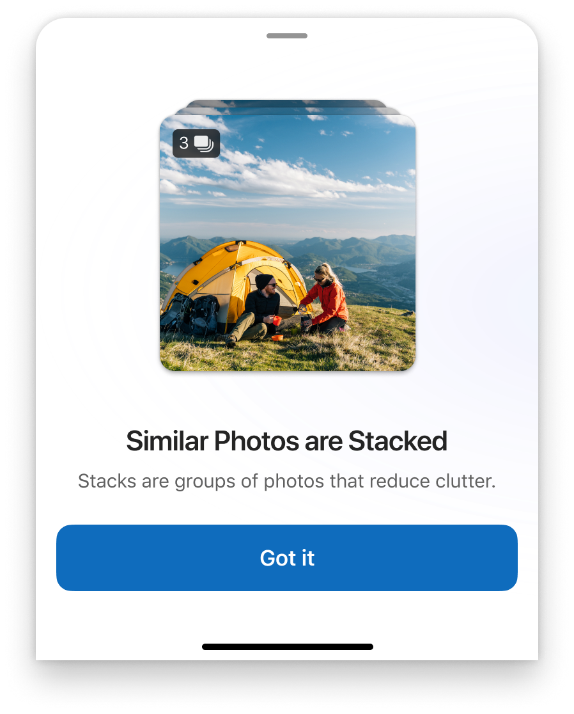

Photostack
A native iOS photo management experience within OneDrive — surfacing and organizing personal photo libraries through AI-assisted grouping, with trust as the central design constraint.

🎯 Problem
Photo organization lacked clarity and discoverability — earlier explorations needed refinement to align with updated technical constraints and product direction, without dedicated PM support. Mis-grouping from AI was the #1 abandonment driver: when stacks were wrong, users lost confidence in the entire experience and stopped taking cleanup actions altogether.
💡 Solution
Led design refinement for Photostacks on iOS — translating early concepts into production-ready flows that improved usability and cross-platform consistency. Held the Photostack surface until ML detection quality met UX thresholds, protecting long-term trust over short-term ship velocity. Advocated for terminology and labels that were intuitive across regions and user types.
🔀 Flows
🧠 Key Decisions
- Single-screen onboarding over a tour. The intro sheet ("Similar Photos are Stacked — Stacks are groups of photos that reduce clutter.") communicates the entire mental model in two sentences. A modal tour would have felt heavier than the feature itself.
- Transparency over magic. Every stack explains its grouping logic — not an unnamed AI grouping. Early "magic" framing backfired when groupings were wrong; transparent reasoning ("similar photos") maintained trust even at imperfect accuracy.
- Glanceability via badge, not label. The stacked count badge surfaces the group without requiring interaction. Users can scan their photo grid and immediately see which thumbnails contain multiples — reducing cognitive load at browsing time.
- Held the surface until quality met thresholds. Recommended pausing Photostack launch until ML detection accuracy stabilized. Unpopular short-term call; the right long-term one — a broken AI grouping experience would have required twice the trust rebuilding.
- Progress without perfect inputs. Advanced design to production-ready specs despite ambiguous PM ownership and shifting technical constraints — design became the unblocking function.
🤝 Collaboration
Worked directly with Engineering to unblock progress in the absence of dedicated PM support. Delivered DevMode specs and redlines, supported implementation training, and coordinated with the broader Photos team on cross-platform consistency.
📊 Impact
- Design delivered on tight timelines despite ambiguous ownership structure
- Enabled engineering ramp-up without PM dependency — design became the unblocking function
- Positioned Photos for future engagement improvements through production-ready specs and clear component contracts
- Deliberate hold on Photostack surface protected trust — prevented shipping a broken AI experience that would have required twice the effort to rebuild